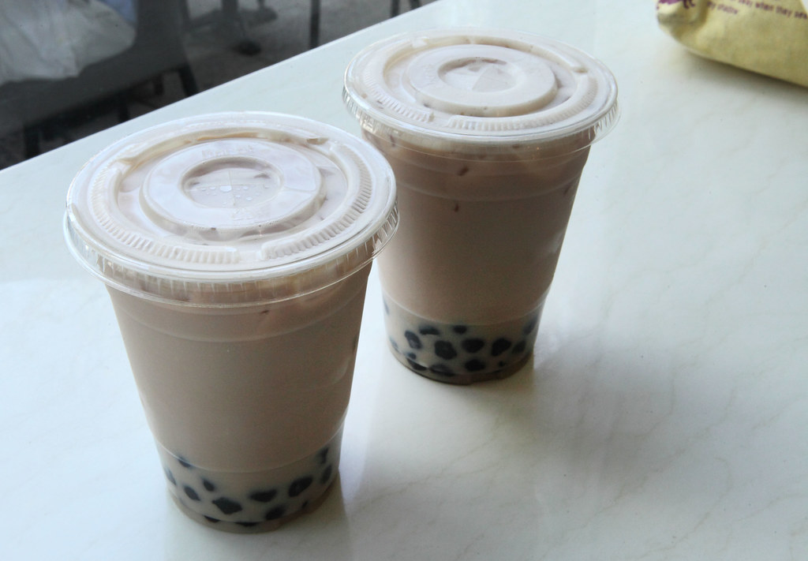

Boba Recipe

Description
This simple recipe involves brewing tea, making milk tea from the said tea, and adding tapioca pearls to create what is possibly the best milk tea drink of all time. Served either chilled or warm, depending on preference or season.
Ingredients
- Tea
- Milk
- Sugar
- Tapioca Pearls
- (Optional) Ice
Steps
- Brew the tea that you prefer
- Add sugar and milk to taste
- Cook tapioca pearls
- If searving chilled, put all parts into the fridge and then assemble the boba tea, adding ice to keep the drink cool
- If serving warm, put all parts into a cup and enjoy